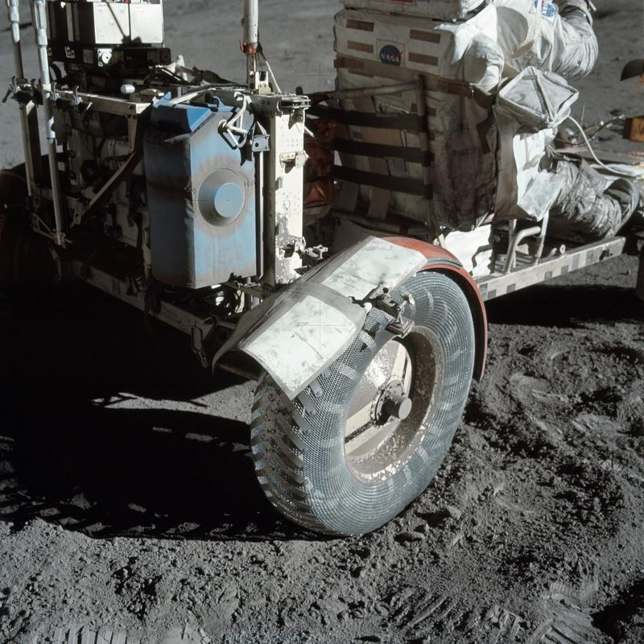
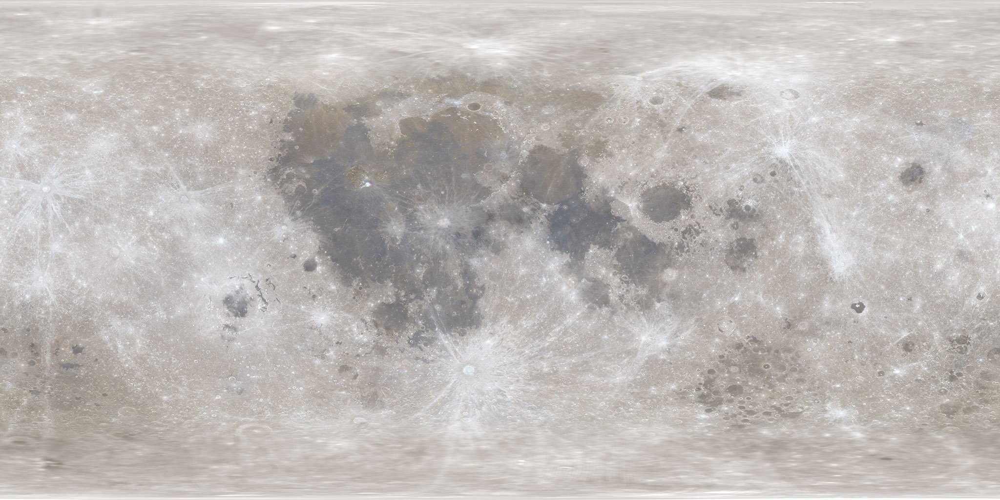

An archive of the machines we left behind
They stopped talking.
Their stories didn’t.
Since 1958, NASA has left rovers, landers, Moon cars and science stations on other worlds — and sent probes sailing out of the solar system. Meet them, hear their “ghost logs”, and find out what they discovered.
Teacher or parent? Get the free lesson plans, worksheets and class quiz →

Every fact is checked against NASA mission records. See our sources →
Start here
Six stops, about ten minutes
New here? Follow this path through the best of the archive: find the machines, hear their stories, see how they worked, and ask them anything.
-
Find the ghosts
The Ghost Map shows every machine where it really lies on the Moon and Mars. Tap a glowing dot to open its dossier.
What was left, and where1 min
-
Hear them speak
Twelve machines tell their own story in short Ghost Log chapters. Press Read aloud to listen.
Told by the machines themselves2 min
-
Opportunity, up close
Follow one rover's 14-year life, moment by moment, then put on X-ray goggles to see the parts that made her discoveries.
From engineering to science2 min
-
How did they land?
Watch parachutes, airbags and sky cranes in step-by-step animations, then try landing on the Moon and Mars yourself.
How the missions worked2 min
-
Comics, podcast and cartoons
The same true stories as a flip-book comic, a kids' podcast and a short cartoon: pick the one you like best.
One story, many formats2 min
-
Ask the ghosts
Ask anything about the machines, in English, Spanish or Hindi, and get an answer built from NASA mission records.
For every learner1 min
Made for ages 8–14 · every story can be read aloud · English, Español and हिंदी · works offline · every fact checked against NASA records (Sources) · free teacher pack
Ghost Map
Where are they now?
Every glowing marker is real hardware, placed at its true latitude and longitude. Tap one to open its dossier.

Double-click to zoom · drag to move
Ghost Logs
Twelve machines tell their own stories
Short chapters written from each machine’s point of view, based on real mission data. Use the arrows or your keyboard (← →).
One story, many formats
Read it, hear it, watch it
The same true stories, told the way you like best: a comic narrated by a lander that is still sitting on Mars, a podcast about the last days of each machine, and short cartoons in their own voices.
Up close
Opportunity: a life in 14 moments
Built to last 90 days, she explored Mars for more than 14 years. Step through her life with her own memories of each moment, then put on the X-ray goggles and look inside her.
How it worked
How do you land on another world?
Parachutes, airbags, sky cranes, crashing on purpose… Pick an animation and press play, or step through it at your own pace.
Play
Games about the machines
Land a spacecraft, steer a rover with a time delay, build a probe and battle with trading cards. Every game uses real mission facts.
Then & now
Still there, years later
Drag the slider (or use the arrow keys) to switch between a photo taken during the mission and a view of the same place years later.
Elsewhere in the Solar System
From Mercury to the stars
NASA hardware also rests on Mercury, sank into Venus, Jupiter and Saturn, circles a dwarf planet, sits on an asteroid and a comet, and some is still sailing out of the solar system. Distances for the travelling probes are estimates for today’s date, calculated from each probe’s speed.
Distance from the Sun in AU (1 AU = Earth–Sun distance, about 150 million km). Each step to the right is 10× farther.
3D Worlds
Stand where they stand
Walk around the real landing sites on measured Moon and Mars terrain, find the hardware still sitting there, and relive two missions from launch to their last day. Each button switches into the 3D app; use “← Home” to come back.
Needs a computer or a recent phone with 3D graphics. Mars sites download about 100 MB the first time.
Ask the Archive
Still curious? Ask the ghosts.
Ask anything about the machines in this archive: how they landed, what they found, where they are now, or what they'd say if they could talk.
Answers come from this site's NASA mission facts, and it works offline. Open the full chat →
Timeline
Sixty years of leaving things behind
Scroll sideways through the decades. Colours show where each machine went.
From the NASA Image and Video Library
The archive
Every picture and video on this site comes from images.nasa.gov. Click any image to see it large, with its NASA ID.
Listen: real sounds from space
Real recordings made by these machines, plus astronauts on the Moon. Sound needs air to travel, so most of space is silent. These were picked up on Mars and the Moon, or turned into sound from vibrations.
Videos
Photos
Explore more
More ways to explore
Games, live data, things to print and tools for projects. Or take the one-minute tour.